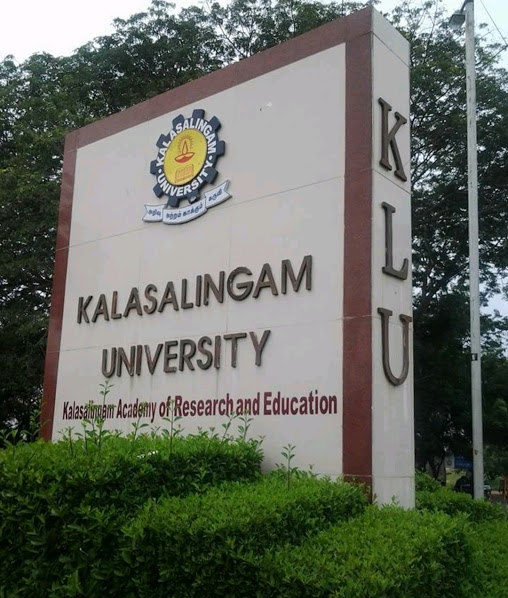

 Kalasalingam Academy of Research and Education (KARE) (Deemed to be University) formerly Arulmigu Kalasalingam College of Engineering was established in 1984 by Kalvivallal Thiru T.Kalasalingam under the trust Kalasalingam and Anandam Ammal Charities, Founder Chairman who was a freedom fighter and Philanthropist. Kalasalingam is Located at the pristine foothills of scenic Western Ghats of southern Tamilnadu. The college obtained the Deemed to be University status in 2006. The Institution has been serving the society for thirty seven long years and it caters to the needs of the students from all walks of the society. Kalasalingam offers UG programmes, PG programmes and Ph.D programmes in various disciplines of Engineering, Science, Technology and Humanities. It is the first Institution in India to introduce a special B.Tech programme in engineering for the differently able (speech and hearing impaired) students. The Institution has been re-accredited by NAAC with ‘A’ grade with a CGPA of 3.11. Six UG programmes have been accredited by NBA under Tier-1. The Institution continues to do indefatigable work in getting projects and research centers. It has received DST funding to establish the National Center for Advance Research in Discrete Mathematics. KARE has got the state of the art IRC with splendid high end instruments for advanced research in material sciences and life sciences. Multistoried separate hostels with plenty of facilities provide accommodation to thousands of students. The institution has spent exorbitant sum to create a world class swimming pool and indoor auditorium for sports. Furthermore KARE gives utmost importance to Intra-mural and Extra mural activities for the holistic development of the students.